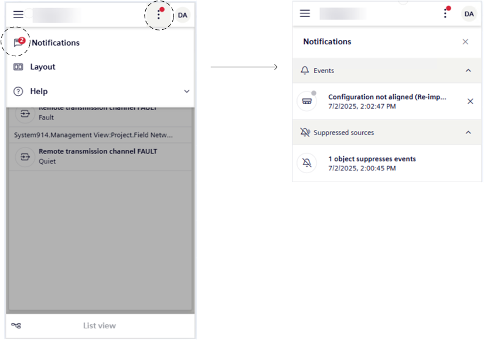

Handle Notification Messages in Mobile Flex
The Notifications screen allows you to view and handle notification messages.

- You set up the display and behavior of notification messages for events, suppressed objects, and license (see Personalize Notifications in Mobile Flex).
- A red dot on top of the more options menu tells you that there are some notifications that require your attention.
- Tap .
- A badge on the Notifications icon tells you the number of unread notification messages.
- Tap Notifications.
- The Notifications screen opens and displays the notifications since the last time the operator cleared the last ones. These notifications are grouped by type.
- To handle event notification messages, in Handle Flex Client Notifications, see:
- View and Dismiss Event Notification Messages
- View the Suppressed Objects Notification Message
- View the License Notification Message
- To handle user account notification messages, in Change Your Password, see:
- Change Your Password when it is About to Expire
- To close the Notifications screen, tap .